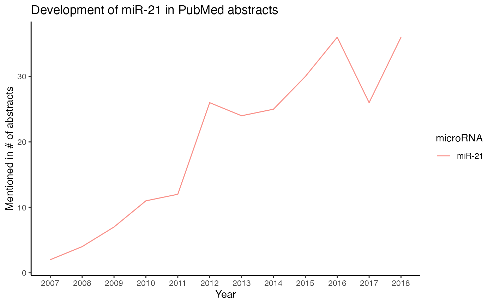
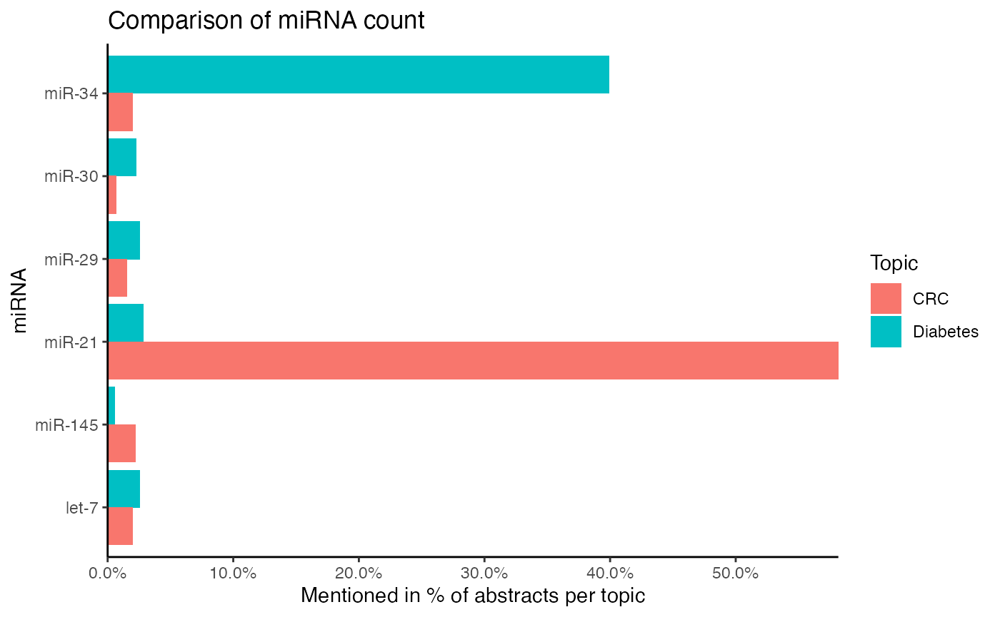
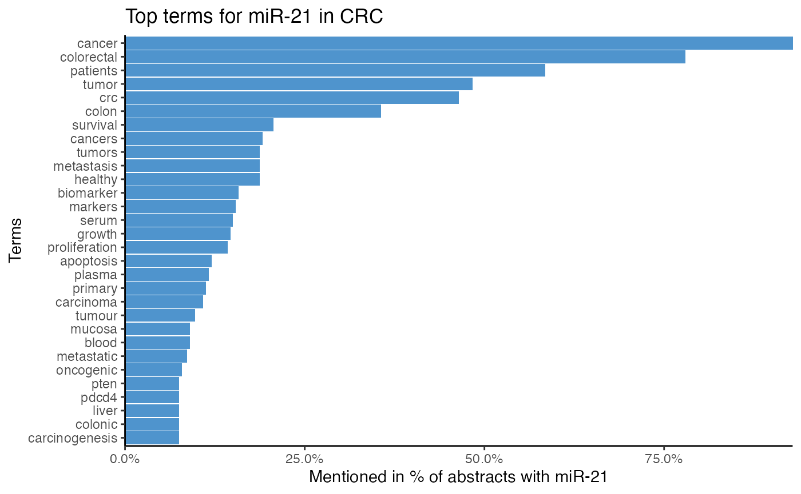

miRetrieve
microRNA text mining in PubMed abstracts
Julian Friedrich1,2, Hans-Peter Hammes2, 3, Guido Krenning1
1Cardiovascular Regenerative Medicine (CAVAREM), Department of Pathology and Medical Biology, University Medical Center Groningen, University of Groningen, The Netherlands.
2Section of Endocrinology, 5th Medical Department, Medical Faculty of Mannheim, University of Heidelberg, Mannheim, Germany.
3European Center of Angioscience, Medical Faculty Mannheim, Heidelberg University, Germany
2021-08-12
miRetrieve.RmdIntroduction
miRetrieve is an R package designed to facilitate text mining with microRNAs (miRNAs) in PubMed abstracts. By extracting miRNA names from large amounts of text, miRetrieve is able to provide insights into thousands of articles within a short amount of time.
In this vignette, we describe how to use miRetrieve. First, we are going to illustrate the mechanisms underlying miRetrieve by introducing basic tools of text analysis, which is a part of Natural Language Processing (NLP). Next, we are going to explain how to use the functions in miRetrieve, before applying miRetrieve in a case study.
Natural Language Processing
Natural Language Processing (NLP) describes the application of computational methods to process and analyze language1.
In this section, we are going to present common tools in NLP, namely tokenization, tf-idf, stop word removal, and topic modeling. These tools aid in gaining and extracting insights from a collection of texts, which are contained in a corpus.
While this list is not exhaustive, it illustrates the mechanisms underlying many functions in miRetrieve and makes their use transparent.
To demonstrate these techniques, we are going to use a toy dataset, generated from abstracts about diabetes. The abstracts have a heavy focus on miR-34 and include some sampled abstracts and therefore do not represent the real data on miRNAs in diabetes.
Regular expressions
Regular expressions are “a sequence of characters that specify a search pattern”2.
In miRetrieve, regular expressions help to extract miRNA names in a multi-steps process: First, minor modifications such as inserting a “-“ between any combination of “RNA” and a digit are made to prepare further extraction. Afterwards, miRNA-like strings are extracted with the regular expression
'[Mm][Ii][Cc]?[Rr][Oo]?[Rr]?[Nn]?[Aa]?[\\‑\\-\\s]?\\d+[a-zA-Z]?[\\‑\\-]?[12345]?[\\‑\\-]?[35]?[Pp]?'while let-7 is extracted using the regular expression
'[Ll][Ee][Tt][\\‑\\-\\s]?\\d+[a-zA-Z]?[\\‑\\-]?[35]?[Pp]?'Then, summarized (e.g. miR-33a/b) and chained miRNA names (e.g. miR-34/-27/-29) are separated, and possible -3, -5 suffices or trailing letters are removed.
What remains are miRNAs that are a combination of miR-/miRNA-/MIR-/microRNA/… + number + (trailing letter). The miRNA numbers and trailing letters are extracted and joined with “miR-“ to unify the name. For let-7, any combination of let-/LET-/Let/… is converted to lower case “let-“.
Finally, miRNA names of older miRBase versions are converted to the most recent miRBase3 version (version 22 as of time of writing) (e.g. miR-97, miR-102, miR-180(a/b) become miR-30a, miR-29a, and miR-172(a/b), respectively).
Tokenization
Tokenization refers to splitting text into smaller pieces, called tokens.
While text can be tokenized in many different ways, two common approaches are single word tokenization and n-gram tokenization (Fig. @ref(fig:tokenize)).
Whereas single word tokenization splits text into single words (Fig. @ref(fig:tokenize) A), n-gram tokenization splits text into each combination of n adjacent words, which are referred to as 2-grams, 3-grams etc. (Fig. @ref(fig:tokenize) B).
During tokenization, capital letters are transformed into lower case letters and punctuation such as . , , , or - is substituted with a space, if not specified otherwise. As a result, terms such as T1DM are transformed into t1dm, while compound terms such as low-density are tokenized into low and density.
Tokenization in NLP. Tokenization refers to splitting text into smaller pieces, called tokens. Two common tokenization approaches are single word tokenization (A) and n-gram tokenization, splitting text into each combination of n adjacent words such as 2-grams (B).
After a text is tokenized, the frequency of each token can provide first insights into the overall subject of the text. If inflammation is one of the most frequent tokens in a text, it can also be assumed that inflammation partially describes the topic of the text. Furthermore, token frequency can be compared between texts and serve as a starting point to determine text (dis)similarity.
While single word tokenization makes text comparison easy, complex n-grams may impede direct comparison. To meaningfully compare the token frequency of the 2-gram low grade, for example, requires many texts to have the exact same combination of low and grade multiple times, whereas it is clear that the chance of same word combinations decreases when n-gram size increases.
However, n-grams shine when word context matters. Single word tokenization of Low grade inflammation (low, grade, inflammation) loses the context of low, and if low is used in the context of low grade inflammation, low expression, or even low-density lipoprotein is not clear. After tokenizing Low grade inflammation into 2-grams, however, the token low grade hints that low is neither associated with expression nor with low-density lipoprotein, which already provides more insight into the context of low.
miRetrieve uses tokenization to generate term associations from text. Per miRNA, all abstracts mentioning this miRNA are tokenized, and stop words are removed. The tokens/terms are then displayed in decreasing frequency, thus displaying terms commonly used in combination with this miRNA throughout different abstracts.
When a function depends on tokenization in miRetrieve, the tokenization type can usually be set via the token argument. token = "words" performs single word tokenization, while token = "ngrams" and a specified n argument performs n-gram tokenization.
# Analyze miRNA-term association of miR-34 by single word tokenization
plot_mir_terms(df_diabetes,
mir = "miR-34",
token = "words")
# Analyze miRNA-term association of miR-34 by 2-gram tokenization
plot_mir_terms(df_diabetes,
mir = "miR-34",
token = "ngrams",
n = 2)tf-idf
term frequency–inverse document frequency, or tf-idf in short, determines how unique and important a token is to one text compared to other texts.
Instead of comparing raw token frequency between texts, tokens are “weighed” depending on how often they are mentioned in one text compared to all other texts under investigation.
When tokenizing the texts
- Cancer can affect any organ.
- Cancer can be caused by mutations.
- Cancer can be caused by viruses
into single words, the tokens cancer and can are present in all three texts, while the tokens be, caused, and by are present in two out of three texts. The tokens affect, any, organ, mutations, and viruses, however, are only present in one text compared to all other texts. Taken together, this suggests that the tokens cancer and can offer no information when distinguishing these texts, while the text specific tokens organ, mutations, and viruses make the texts distinguishable and are thus more important for each text.
In miRetrieve, tf-idf can be used to determine how important a term is to a miRNA compared to other miRNAs in a corpus. If inflammation is only associated with miR-146, but not associated with miR-374 or miR-23, then inflammation is very specific for miR-146.
When a miRetrieve function offers tf-idf analysis, such as plot_mir_terms() or plot_wordcloud(), it can be applied by setting tf.idf = TRUE.
# Analyze miRNA-term association of miR-34 with tf-idf
plot_mir_terms(df_diabetes,
mir = "miR-34",
tf.idf = TRUE)Stop words
Stop words refer to common words that offer no information for text analysis, such as a, is, or whether, and are thus often removed (Fig. @ref(fig:stop)).
Stop word removal. Stop words refer to common words that offer no information for text analysis. It is therefore common practice to remove stop words in text analysis.
In miRetrieve, stop words are removed in two ways depending on tokenization type, namely stop word removal for single word tokenization and stop word removal for n-gram tokenization.
Stop words for single word tokenization
To remove stop words for single word tokenization, stop words must be provided in a data frame. miRetrieve comes with predefined stop words, namely stopwords_miretrieve, which combines English stop words4, such as a, is, or whether, with stop words of PubMed abstracts, such as western, qpcr, or significant.
If only English stop words shall be removed, stop_words from the tidytext package can be used.
# Remove common English and PubMed words with `stopwords_miretrieve`
plot_mir_terms(df_diabetes,
mir = "miR-34",
stopwords = stopwords_miretrieve)
# Remove common English words with `stop_words` from tidytext
plot_mir_terms(df_diabetes,
mir = "miR-34",
stopwords = tidytext::stop_words)
Additionally, stop words can be generated from custom terms with generate_stopwords(). These generated stop words can be added to an existing stop word data frame using the argument combine_with. Additionally, several stop words data frames can be combined with combine_stopwords().
# Vector of custom stop words
custom_stopwords <- c("these", "are", "some", "custom", "stop", "words")
# Generate custom stop words data frame
# Combine custom stop words with `stopwords_miretrieve`
custom_stopwords_df <- generate_stopwords(custom_stopwords,
combine_with = stopwords_miretrieve)
# Generate custom stop words data frame
# Combine with `tidytext::stop_words` separately
custom_stopwords_df <- generate_stopwords(custom_stopwords)
stopwords_combined <- combine_stopwords(custom_stopwords_df,
tidytext::stop_words)Stop words for n-gram tokenization
For n-gram tokenization, miRetrieve removes English stop words and PubMed stop words separately. First, English stop words5 are removed, and n-gram stop words are removed afterwards. The separation in stop word removal for English and n-gram stop words is explained by the increase in complexity with bigger n-grams.
While English stop words are removed by setting stopwords_ngram = TRUE, n-grams to be removed must be provided in a data frame. stopwords_miretrieve removes common 2-grams, while stop words for bigger n-grams must be generated manually with generate_stopwords().
# Remove English stop words for 2-gram tokenization
# Remove PubMed 2-grams with `stopwords_miretrieve`
plot_mir_terms(df_diabetes,
mir = "miR-34",
token = "ngrams",
n = 2,
stopwords = stopwords_miretrieve,
stopwords_ngram = TRUE)
Topic modeling
topic modeling describes the identification of topics in a corpus. Topics can either be identified in a supervised, e.g. controlled manner, or in an unsupervised, e.g. blind manner.
Supervised topic modeling
Supervised topic modeling refers to identifying known topics in a corpus, and thus requires prior knowledge.
miRetrieve offers supervised topic modeling by heuristically identifying topics with keywords: First, a topic is defined by keywords, and these keywords are then used to calculate a topic score for each text in the corpus. The topic score reflects how well a text matches the keywords, and if the topic score surpasses a threshold, the text is considered to match the topic.
There are three pre-implemented heuristic topic models in miRetrieve, namely
- abstracts that investigate miRNAs in patients,
- abstracts that investigate miRNAs in animal models,
- abstracts that investigate miRNAs as biomarkers.
While knowledge about how often a miRNA has been investigated in patients or in animal models can estimate the translation between bench and bedside, identifying which miRNA is most likely a biomarker aids in estimating its specificity compared to other fields.
For each heuristic model, a topic score can be calculated using calculate_score_patients(), calculate_score_animals(), and calculate_score_biomarker(). Furthermore, each calculate_score_*() function has a corresponding plot_score_*() function (plot_score_patients(), plot_score_animals(), and plot_score_biomarkers()), which plots the distribution of scores across all abstracts, and helps in choosing a threshold for topic assignment.
# Plot score distribution, determine threshold
plot_score_patients(df_diabetes)
# Calculate score for abstracts investigating miRNAs in patients
df_patients <- calculate_score_patients(df_diabetes,
threshold = 5)Next to the pre-implemented models, custom topics can be defined with custom keywords using calculate_score_topic() and its corresponding plot_score_topic() function.
# Define keywords of custom topic "angiogenesis"
keywords_angiogenesis <- c("angiogenesis", "vegf", "vascularization",
"sprouting")
# Plot distribution of "angiogenesis" scores
plot_score_topic(df_diabetes,
keywords = keywords_angiogenesis,
name.topic = "Angiogenesis")
# Calculate angiogenesis score for each abstract
df_angio <- calculate_score_topic(df_diabetes,
keywords = keywords_angiogenesis,
threshold = 2)While one abstract can belong to multiple topics, abstracts can also be assigned to only one out of two or more topics: First, topic scores for all topics of interest are calculated, using calculate_score_topic(). Afterwards, each abstract is assigned to the topic where it surpasses a threshold and achieves the highest topic score,
using assign_topic(). If the topic score of an abstract does not surpass the threshold in any topic, the topic of the abstract is labelled as "Unknown".
# Define keywords for type 1 diabetes
keywords_t1dm <- c("pancreas", "beta cells", "gada")
# Define keywords for type 2 diabetes
keywords_t2dm <- c("insulin resistance", "obesity", "metformin")
# Calculate type 1 diabetes scores for each abstract
df_diabetes <- calculate_score_topic(df_diabetes,
keywords = keywords_t1dm,
col.score = "T1DM")
# Calculate type 2 diabetes scores for each abstract
df_diabetes <- calculate_score_topic(df_diabetes,
keywords = keywords_t2dm,
col.score = "T2DM")
# Assign abstracts with a score of >= 3 in "T1DM" to type 1 diabetes
# Assign abstracts with a score of >= 3 in "T2DM" to type 2 diabetes
# Abstracts with a score < 3 in "T1DM" and "T2DM" are assigned to
# "Unknown".
assign_topic(df_diabetes,
col.topic = c("T1DM", "T2DM"),
threshold = c(3, 3))Unsupervised topic modeling
Unsupervised topic modeling refers to identifying topics in a corpus with algorithms. As unsupervised topic modeling does not require prior knowledge, unsupervised topic modeling can be used to detect and uncover hidden topics in a corpus.
In miRetrieve, unsupervised topic modeling can be conducted with the Latent Dirichlet Algorithm (LDA), based on the topicmodels package[2].
To perform topic modeling with LDA, LDA requires the user to specify the number of topics. Based on different criteria and probability distributions, LDA then identifies as many topics as specified in the corpus, and assigns each text in the corpus a topic probability to belong to either topic. Ultimately, each text is assigned to the topic with its highest topic probability (Fig. @ref(fig:lda) A).
Based on the texts within each topic, the subjects of the topics identified without supervision can then be determined by comparing their token frequency (Fig. @ref(fig:lda) B).
Unsupervised topic modeling with LDA. (A) LDA is fit on a corpus and identifies k = 3 topics based on different criteria. For each text in the corpus, a topic probability to belong to either topic is calculated and the text is assigned to the topic with the highest topic probability.
(B) Tokenizing the texts in a topic and determining their most frequent tokens aids in inferring the main subject of discovered topics.
This whole process of identifying topics and calculating topic probabilities is referred to as model fitting. While an LDA model can be fit with fit_lda(), the topics are ultimately assigned to each text with assign_topic_lda(). The subjects of the topics can be identified with plot_lda_terms().
# Fit LDA model with k = 3 topics
# Identify 3 topics in df
lda_model <- fit_lda(df_diabetes,
k = 3)
# Identify subject of topics
plot_lda_term(lda_model)The first topic embraces insulin, t2d(m), metabolic, and liver and might therefore summarize abstracts on diabetes type 2 and insulin resistance. The second topic, however, stresses nephropathy, urinary, and dn - a common abbreviation for diabetic nephropathy (or neuropathy in some cases) and likely encompasses abstracts about diabetic nephropathy. Finally, topic number 3 enlists endothelial, heart, and dr, an abbreviation for diabetic retinopathy, which could hint at abstracts about endothelial dysfunction in diabetes.
# Assign LDA topics
assign_topic_lda(df_diabetes,
lda_model = lda_model,
topic.names = c("Insulin resistance",
"Nephropathy",
"Endothelial dysfunction"))As the optimal number of topics for LDA modeling is often unknown, one approach is to fit many LDA models, which differ in topic number, and to compare their perplexity. In LDA, perplexity measures how well a model fits the topics, while a lower perplexity corresponds to a better model. When comparing the perplexity of LDA models with different topic numbers, an increase in topic number often leads to a steep decrease in model perplexity at the beginning, indicating a model improvement with an increase in topic number. After a certain point, however, further increasing the topic number often leads to a marginal decrease in perplexity only, indicating that the model improves only marginally with an increase in topic number. The topic number where the decrease in perplexity starts to flatten is usually a good starting point for LDA modeling in practice.
In miRetrieve, the perplexity of different LDA models can be compared with plot_perplexity(). plot_perplexity() fits LDA models over different topic numbers and compares their perplexity in an elbow plot.
Using the elbow plot on our diabetes data set, plot_perplexity() generates
# Plot perplexity for 2 to 5 topics
# Identify optimal topic number
plot_perplexity(df_diabetes, start = 2, end = 5)As the curve describes an “elbow” at k = 3, our previous choice with fit_lda(df, k = 3) seems to have been reasonable.
miRetrieve functions
In the following section, we are going to describe how to use and combine the functions in miRetrieve.
First, we are going to outline how to install miRetrieve, before we explain how to load, prepare, and save data for and from analysis. Afterwards, we are going to illustrate how to analyze the miRNA landscape in one subject, before describing how to compare the miRNA landscape of multiple subjects.
To demonstrate miRetrieve’s functions, we are going to use another toy dataset that contains miRNAs in Colorectal Cancer (CRC). This dataset contains many abstracts on miR-21 combined with some sampled abstracts and therefore does not represent a real world cross-section on miRNAs in CRC.
Load, prepare, and save data
Load data
miRetrieve is optimized to work with PubMed abstracts in PubMed-format, which can be downloaded from PubMed via Save –> Selection: All results, Format: PubMed –> Create File.
The resulting PubMed-file can be loaded into R with read_pubmed() .
When loading abstracts with read_pubmed(), all abstracts can be assigned a Topic column, which denotes the subject of a file and facilitates miRNA comparison between topics. If a Topic column is not specified while loading, it can also be added with add_col_topic().
# Read in PubMed-file from colorectal cancer abstracts
# Denote abstracts as "CRC"
df_crc <- read_pubmed("CRC_PubMed.txt", topic = "CRC")
# Is the same as
df_crc <- read_pubmed("CRC_PubMed.txt")
df_crc <- add_col_topic(df, topic.name = "CRC")Multiple files can be combined into one data frame with combine_df(), which is crucial when comparing miRNAs of multiple topics.
# Load first PubMed-file
df1 <- read_pubmed("pubmedfile1.txt",
topic = "cANCA")
# Load second PubMed-file
df2 <- read_pubmed("pubmedfile2.txt",
topic = "pANCA")
# Combine df1 and df2
df_large <- combine_df(df1, df2)Prepare data
Subset abstracts
Abstracts loaded into R can be subset for original research or review articles with subset_research() and subset_review() respectively. Furthermore, abstracts can also be subset for a specific publishing period with subset_year().
Subsetting abstracts with subset_*() keeps only abstracts of interest, while abstracts belonging to another article type or published outside the defined period are dropped.
# Subset for abstracts of original research articles
df_research <- subset_research(df_crc)Extract miRNA names
One of the core functions of miRetrieve the extraction of miRNA names from abstracts with extract_mir_df(). miRNA names are extracted using regular expressions, and extracted miRNA names are stored in a separate miRNA column, where each miRNA name occupies one row.
Next to extracting miRNA names from abstracts, miRNA names can also be extracted from single strings with extract_mir_string().
Both extract_mir_*() functions extract miRNA names either without or with a possible trailing letter (e.g. miR-23 or miR-23a). As the use of miRNA nomenclature is rather inconsistent throughout literature, it is recommended to ignore trailing letters with extract_letters = FALSE6.
Furthermore, extract_mir_*() has a threshold argument determining how often a miRNA must be in an abstract/string to be extracted. As miRNA names also change over time, deprecated miRNA names are automatically converted to the most recent miRBase version (e.g. miR-97, miR-102, miR-180(a/b) become miR-30a, miR-29a, and miR-172(a/b), respectively).
# Extract miRNA names mentioned at least twice in an abstract without trailing letters
df_crc <- extract_mir_df(df_crc,
threshold = 2,
extract_letters = FALSE)
# Extract miRNA names from a string with trailing letters
extract_mir_string("miR-146a is an important miRNA in inflammation.",
extract_letters = TRUE)An exemplary output is
head(df_crc)
#> # A tibble: 6 x 8
#> PMID Year Title Abstract Language Type Topic miRNA
#> <dbl> <dbl> <chr> <chr> <chr> <chr> <chr> <chr>
#> 1 3.15e7 2019 MicroRNAs expres… Egypt has increas… eng Journ… CRC miR-…
#> 2 3.15e7 2019 In Vitro and In … Although chemothe… eng Journ… CRC miR-…
#> 3 3.15e7 2019 Assessment of Se… BACKGROUND: Micro… eng Journ… CRC miR-…
#> 4 3.15e7 2019 MicroRNA regulat… Colorectal cancer… eng Journ… CRC miR-…
#> 5 3.14e7 2019 MicroRNAs play a… Arsenic exposure … eng Journ… CRC miR-…
#> 6 3.13e7 2019 Faecal microRNAs… MicroRNAs (miRNAs… eng Journ… CRC miR-…Subset and indicate miRNA names
After extracting miRNA names, abstracts can be subset for miRNAs with subset_mir() and subset_mir_threshold().
While subset_mir() subsets abstracts for specified miRNAs, subset_mir_threshold() subsets abstracts for miRNAs that are mentioned with a determined frequency. This frequency can either be an integer, corresponding to the minimal number of abstracts a miRNA is mentioned in, or it can be a decimal between 0 and 1, corresponding to the minimal relative number of abstracts a miRNA is mentioned in.
# Keep only abstracts with miR-126 and miR-146
df_mir126_miR_146 <- subset_mir(df_crc,
mir.retain = c("miR-126", "miR-146"))
# Keep only abstracts with miRNAs mentioned in at least 5% of all abstracts
df_five_ab <- subset_mir_threshold(df_crc,
threshold = 0.05)Instead of subsetting abstracts for a specific miRNA, abstracts with a specific miRNA can also be labelled with indicate_mir(). Per specified miRNA name in indicate_mir(), a separate Yes/No column is added indicating the presence of the miRNA in the abstract.
# Indicate abstracts with miR-126 and miR-146
df_mir126_miR_146 <- indicate_mir(df_crc,
indicate.mir = c("miR-126", "miR-146"))
# Save data frame as an .xlsx file
# Filter for miR-126 and miR-146 in excel
save_excel(df_mir126_miR_146,
excel_file = "df_mir_126146.xlsx")Subset data frame
While many functions of the subset_*() and indicate_*() family provide the possibility of subsetting a data frame, each data frame can also be individually subset with subset_df().subset_df() is a wrapper of dplyr’s filter().
# Subset data frame with customized arguments
subset_df(df_crc,
col.filter = "miRNA",
filter_for = "miR-126")
# `subset_df()` is a more general version of
subset_mir(df_crc, "miR-126")Save data
During analysis, any data frame or graph can be saved locally with save_excel() or save_plot() respectively.
Save data frame to excel
save_excel() saves a data frame as an .xlsx-file. When more than one data frame is passed to save_excel(), each data frame is saved as a separate work sheet in the same .xlsx-file.
# Save df_crc and df_diabetes to the same .xlsx-file
save_excel(df_crc, df_diabetes,
excel_file = "miRetrieve_df.xlsx")Save plots
save_plot() saves the last generated plot, while the plot properties can be defined with width, height, and dpi. save_plot() is a wrapper of ggplot2’s ggsave().
# Save last plot
save_plot("Last_plot.pdf",
height = 5,
width = 7,
dpi = 300)Extract PubMed-IDs
PubMed-IDs can be extracted from a data frame with get_pmid(). By default, get_pmid() copies the PubMed-IDs to the clipboard, which can be used further outside R.
Additionally, get_pmid() can also extract PubMed-IDs as a string by setting copy = FALSE.
# Copy PubMed-IDs to clipboard
get_pmid(df_crc,
copy = TRUE)miRNA text mining in one subject
The following section focuses on miRNA text mining in one subject, opposed to miRNA text mining in several subjects.
Here, we are going to describe how to count miRNAs and display their development. Next, we are going to explain how to display which terms a miRNA is associated with, before illustrating how to visualize which targets miRNAs regulate.
The functions in this section require the miRNAs names to be extracted with extract_mir_*().
Count miRNAs
How many abstracts mention a miRNA can be identified either with count_mir() or plot_mir_count(). While count_mir() displays the miRNA count in a data frame, plot_mir_count() visualizes the count of the most frequently mentioned miRNAs.
Again, please bear in mind that this dataset contains randomly sampled abstracts and many abstracts on miR-21.
# Count how many abstracts mention a miRNA
head(count_mir(df_crc))
#> # A tibble: 6 x 2
#> miRNA Mentioned_n
#> <chr> <int>
#> 1 miR-21 267
#> 2 miR-145 10
#> 3 let-7 9
#> 4 miR-34 9
#> 5 miR-29 7
#> 6 miR-196 6
# Plot the count of the five most frequently mentioned miRNAs
plot_mir_count(df_crc,
top = 5)
Count exceeding miRNAs
Next to counting how many abstracts mention one miRNA, counting how many miRNAs are mentioned in a minimal number of abstracts can be done with count_mir_threshold() or plot_mir_count_threshold().
Counting how many miRNAs are mentioned in a minimal number of abstracts provides information if the majority of abstracts focus on a few miRNAs only, or if the interest in several miRNAs is evenly distributed across a field.
count_mir_threshold() accepts a threshold argument and counts how many miRNAs are mentioned in at least threshold abstracts. threshold can either be an integer, counting how many miRNAs are mentioned in a minimal number of abstracts, or it can be a decimal between 0 and 1, counting how many miRNAs are mentioned in a relative number of abstracts compared to all abstracts.
plot_mir_count_threshold() displays the count of miRNAs over several thresholds. Similar to count_mir_threshold, the thresholds can either be integers or decimals.
# Count how many miRNAs are mentioned in at least 5 abstracts
count_mir_threshold(df_crc,
threshold = 5)
#> [1] 10
# Plot how many miRNAs are mentioned in at least 5 to 10 abstracts
plot_mir_count_threshold(df_crc,
start = 5,
end = 10)Count miRNAs per year
How often a miRNA was mentioned per year can be visualized with plot_mir_development().
# Plot development of miR-21 until 2018
plot_mir_development(df_crc,
mir = c("miR-21"),
end = 2018)
Count new miRNAs per year
How many miRNAs are mentioned for the first time in a year can be displayed with plot_mir_new().
Displaying how many miRNAs are mentioned for the first time in a year estimates the dynamism of a field, e.g. if recent abstracts mention miRNAs previously not reported, or if recent abstracts focus on miRNAs already mentioned in previous years.
plot_mir_new() also provides a threshold argument determining in how many abstracts of a year a miRNA must be mentioned to be considered mentioned. By setting a threshold, miRNAs that are only sparsely mentioned in a year are ignored.
# Plot newly mentioned miRNAs per year until 2018;
# miRNAs need to be reported in at least 3 abstracts/year
# to be considered "mentioned"
plot_mir_new(df_crc,
threshold = 3,
end = 2018)
Associate miRNAs with terms
Terms often associated with a miRNA can be visualized using plot_mir_terms().
While plot_mir_terms() performs single word tokenization by default, plot_mir_terms() can also perform n-gram tokenization by setting token = ngrams and specifying a separate n argument.
# Plot top terms of miR-21
plot_mir_terms(df_crc,
mir = "miR-21")
# Plot top 2-grams of miR-21
plot_mir_terms(df_crc,
mir = "miR-21",
token = "ngrams",
n = 2)Next to plotting the top terms as a bar plot, top terms can also be visualized as a word cloud with plot_wordcloud().7
# Word cloud of miR-21
plot_wordcloud(df_crc,
mir = "miR-21",
max.terms = 40,
colours = c("lightblue"))
#> # A tibble: 1,118 x 3
#> PMID word n
#> <dbl> <chr> <int>
#> 1 17702597 fu 3
#> 2 17702597 neoplastic 3
#> 3 17968323 metastasis 3
#> 4 17968323 pdcd4 11
#> 5 18196926 crc 6
#> 6 18196926 tumor 3
#> 7 18196926 tumors 3
#> 8 18230780 cancer 4
#> 9 18230780 colon 4
#> 10 18230780 patients 3
#> # … with 1,108 more rowsIndicate terms
Abstracts can be screened for terms with indicate_term(). Per term, indicate_term() signals it presence in an abstract with a separate Yes/No column.
How often a term must be in an abstract to be considered present can be controlled with a threshold argument. Furthermore, indicate_term() can also keep only abstracts containing the term(s) of interest via the discard argument. A possible application is to keep abstracts that mention a certain drug, and to re-count the most frequent miRNAs in this subset.
# Indicate and keep abstracts that mention "bevacizumab" at least twice
abstracts_beva <- indicate_term(df_crc,
term = "bevacizumab",
threshold = 2,
discard = TRUE)
# Count miRNAs in "bevacizumab" abstracts
head(count_mir(abstracts_beva), 2)
#> # A tibble: 1 x 2
#> miRNA Mentioned_n
#> <chr> <int>
#> 1 miR-579 1Identify miRNA targets
miRetrieve can integrate miRNA targets from excel files such as miRTarBase[4] with join_targets().
join_targets() loads an excel-file with PubMed-IDs and miRNA targets and adds it to a miRetrieve data frame by matching their PubMed-IDs.
# Adds targets from miRTarBase from an excel file (see "References") to df
df_targets_crc <- join_targets(df_crc,
excel_file ="miRTarBase_MTI.xlsx",
col.pmid.excel = "References (PMID)",
col.target.excel = "Target Gene",
col.mir.excel = "miRNA")Additionally, miRetrieve comes with the latest miRTarBase version 8.0 and can be queried via join_mirtarbase(). If you use miRTarBase with miRetrieve, please make sure to cite [4].
# Adds targets from miRTarBase (see "References") to df
df_targets_crc <- join_mirtarbase(df_crc,
col.topic.df = Topic,
reduce = TRUE)After adding the targets, target frequency can be counted with count_target() or visualized with plot_target_count().
# Plot target frequency
plot_target_count(df_targets_crc)Furthermore, miRNA-target interactions can be plotted with plot_target_mir_scatter().plot_target_mir_scatter() plots either the most frequently targeted genes, or it plots the top miRNAs targeting genes. If the focus shall be on the top targets or top targeting miRNAs, can be regulated via the filter_for argument.
# Plot most frequently targeted genes
plot_target_mir_scatter(df_targets_crc,
filter_for = "target")
Single Nucleotide Polymorphism
Single Nucleotide Polymorphisms (SNPs) can be extracted from abstracts with extract_snp().
extract_snp() retrieves SNPs from abstracts and stores them in a column. Unlike extract_mir_df(), however, all extracted SNPs of an abstract are stored in the same row. Furthermore, extract_snp() can also subset abstracts containing SNPs via the discard argument.
# Exctract SNPs
# Keep only abstracts with SNPs
snp_df <- extract_snp(df_crc,
discard = TRUE)Extracted SNPs can be counted with count_snp(), while abstracts can be subset for specific SNPs with subset_snp().
To facilitate filtering for SNPs, SNP names can be extracted from a data frame with get_snp(). get_snp() retrieves the string of a SNP by row, which can be passed to subset_snp().
# Count SNPs
snp_count_df <- count_snp(snp_df)
# Extract SNP name in the second row of snp_count_df
second_snp_string <- get_snp(snp_count_df,
row = 2)
# Subset `snp_df` for abstracts containing `second_snp_string`
subset_snp(snp_df,
snp.retain = second_snp_string)miRNA text mining in multiple subjects
Next to miRNA text mining in a single subject, miRetrieve also offers tools to compare the results of miRNA text mining in multiple subjects.
In this section, we are going to explain how to compare miRNA count and miRNA-term association, using df_crc and df_diabetes from previous examples. Furthermore, we are going to describe how to visualize miRNA-target interactions across fields.
Data preparation
To compare different subjects, each subject is loaded separately with read_pubmed_*(). Furthermore, each field must be assigned a distinct topic name, using either the topic argument of read_pubmed_*() or add_col_topic().
# Load abstracts of diabetes
df_diabetes <- read_pubmed("pubmed_diabetes.txt", topic = "Diabetes")
# Load abstracts of colorectal cancer
df_crc <- read_pubmed("pubmed_crc.txt", topic = "CRC")Afterwards, all files are combined for further analysis with combine_df().
# Combine abstracts of topics
df_combined <- combine_df(df_diabetes, df_crc)Extract miRNA names as strings
A key difference to text mining in one subject is that the miRNAs to analyze must be specified.
For this, miRNA names can be extracted as strings from a data frame using get_mir(), get_shared_mir*(), get_distinct_mir_*(), and combine_mir().
-
get_mir()extracts either the most frequently mentioned miRNAs or the miRNAs that are mentioned in a minimum number of abstracts.
Moreover,get_mir()can also extract the top miRNAs of one subject with atopicargument. -
get_shared_mir*()provides the most frequent miRNAs that are shared between two subjects.get_shared_mir_df()extracts the shared miRNAs from a data frame, whileget_shared_mir_vec()extracts the shared miRNAs from two character vectors.# Get top shared miRNAs of "Diabetes" and "CRC" get_shared_mir_df(df_combined, topic = c("Diabetes", "CRC")) -
get_distinct_mir*()provides the most frequent miRNAs that are distinct for one topic, but do not belong to the top miRNAs of another topic.get_distinct_mir_df()extracts the distinct miRNAs from a data frame, while the topic to extract the distinct miRNAs from is determined with thedistinctargument.get_distinct_mir_vec()extracts the distinct miRNAs of the first character vector from two character vectors.# Get top miRNAs distinct for "CRC" compared to the top miRNAs of "Diabetes" get_distinct_mir_df(df_combined, distinct = "CRC") -
combine_mir()combines character vectors with miRNA names into one vector.# Get top 5 miRNAs of "CRC" top_crc <- get_mir(df_combined, top = 5, topic = "CRC") # Get top 5 miRNAs of "Diabetes" top_diabetes <- get_mir(df_combined, top = 5, topic = "Diabetes") # Combine vectors top_combined <- combine_mir(top_crc, top_diabetes)
Compare miRNA count
How many abstracts per subject mention a miRNA can be compared with compare_mir_count().
compare_mir_count() displays either the absolute number of abstracts per subject mentioning a miRNA, or it can display the relative number of abstracts per subject mentioning a miRNA, referring to the number of abstracts with a miRNA relative to all abstracts per subject.
Furthermore, the relative count of miRNAs can be compared between two subjects on a log2-scale with compare_mir_count_log2().
Please bear in mind that both datasets are randomly sampled. Additionally, the diabetes dataset has a heavy focus on miR-34, while the CRC dataset stresses miR-34. The following figures are therefore for illustration purposes only.
# Compare miRNA frequency between topics
compare_mir_count(df_combined,
mir = top_combined)
# Compare miRNA frequency between subjects on a log2-scale
compare_mir_count_log2(df_combined,
mir = top_combined)
#> $data.frame
#> # A tibble: 6 x 4
#> miRNA CRC Diabetes log2_ratio
#> <fct> <dbl> <dbl> <dbl>
#> 1 let-7 0.0196 0.0253 -0.367
#> 2 miR-145 0.0218 0.00562 1.96
#> 3 miR-21 0.582 0.0281 4.37
#> 4 miR-29 0.0153 0.0253 -0.729
#> 5 miR-30 0.00654 0.0225 -1.78
#> 6 miR-34 0.0196 0.399 -4.35
#>
#> $plot
Identify unique miRNAs
Instead of comparing shared miRNAs, most frequent unique miRNAs of each topic can be displayed with compare_mir_count_unique().
# Identify 5 most frequent unique miRNAs per topic
compare_mir_count_unique(df_combined,
top = 5)
Compare term associations
There are three functions to compare miRNA-term associations across subjects, namely compare_mir_terms(), compare_mir_terms_log2(), and compare_mir_terms_scatter().
While compare_mir_terms() can compare the top term count of a miRNA over many subjects, compare_mir_terms_log2() and compare_mir_terms_scatter() can compare the top term count of a miRNA over two subjects only.
compare_mir_terms() plots the count of top miRNA-term associations, whereascompare_mir_terms_log2() compares the miRNA-term association between two subjects on a log2-scale.8
# Compare term frequency for miR-21 between topics
compare_mir_terms(df_combined,
mir = "miR-21",
top = 10)
# Compare term frequency for miR-21 between two topics on a log2-scale
compare_mir_terms_log2(df_combined,
mir = "miR-21",
top = 10)
#> $data.frame
#> # A tibble: 23 x 5
#> word number_topic CRC Diabetes log2_ratio
#> <fct> <int> <dbl> <dbl> <dbl>
#> 1 blood 2 0.0899 0.1 -0.154
#> 2 fibrosis 2 0.00375 0.2 -5.74
#> 3 hemoglobin 2 0.00375 0.2 -5.74
#> 4 progenitor 2 0.00375 0.2 -5.74
#> 5 rats 2 0.00375 0.2 -5.74
#> 6 tubular 2 0.00749 0.2 -4.74
#> 7 tnf 2 0.0112 0.2 -4.15
#> 8 egfr 2 0.0150 0.2 -3.74
#> 9 pathogenesis 2 0.0337 0.2 -2.57
#> 10 resistance 2 0.0449 0.2 -2.15
#> # … with 13 more rows
#>
#> $plotFinally, compare_mir_terms_scatter() creates a scatter plot, displaying the frequency of the shared miRNA-associated terms.9
Note: The created scatter plot might not be displayed correctly if the vignette is downloaded. To see its interactivity in action, please generate the vignette straight in R.
# Compare terms of miR-21 between two topics
compare_mir_terms_scatter(df_combined,
mir = "miR-21")Identify unique term associations
The most frequent terms a miRNA is associated with in one, but not another topic can be displayed with compare_mir_terms_unique().
# Identify top 10 unique terms of miR-21 per topic
compare_mir_terms_unique(df_combined,
mir = "miR-21", top = 10)Compare target interactions
As described previously, targets can be added from an excel file with join_targets(). When a data frame contains miRNA-target interactions in multiple subjects, plot_target_mir_scatter() colours the miRNA-target interaction by subject, thereby allowing easy comparison of miRNA-target interactions across fields. See the Case study below for examples.
Case study
In the last section, we are going to apply miRetrieve in a small case study.
Introduction
In this fictive case study, our lab detected miR-21 to be aberrantly expressed in colorectal cancer (CRC). Using miRetrieve, we characterize the role of miR-21 in CRC and compare it to its role in pancreatic cancer.
Data preparation
To investigate the role of miR-21 in CRC, we load all PubMed abstracts matching the keywords colorectal cancer mirna with read_pubmed(). Then, we keep only abstracts of original research articles, using subset_research(), and subsequently extract their miRNA names with extract_mir_df().
For illustration purposes (and to keep the size of sample files small), we are again going to use a toy dataset on miRNAs in CRC that has a heavy focus on miR-21, but also contains some randomly chosen abstracts.
During our analysis, we use the %>% operator from the magrittr package. %>% passes the result of one function straight into the following function, making our code easier to write, read, and maintain.
# Load miRetrieve
library(miRetrieve)
# Load magrittr
library(magrittr)
# Path to PubMed-file
crc_pubmed <- "CRC_PubMed.txt"
# Load PubMed-file
df_crc <- read_pubmed(crc_pubmed,
topic = "CRC") %>%
# Keep abstracts of original research articles
subset_research() %>%
# Extract miRNA names
extract_mir_df() After loading and filtering the abstracts, we have a data frame with 508 rows and 8 columns, named PMID, Year, Title, Abstract, Language, Type, Topic, miRNA. As each miRNA name occupies one row in the miRNA column, and each abstract can mention more than one miRNA, there are more rows in the data frame than abstracts under investigation.
Indicate miR-21 in CRC and save file
We know that we are going to need information on miR-21 in the future. We therefore label all abstracts mentioning miR-21 with indicate_mir(), and save the table as an .xlsx-file. Saving the table locally will allow us to read and compare PubMed abstracts mentioning miR-21 comfortably.
# Label all abstracts mentioning miR-21 with "Yes"
df_mir21 <- indicate_mir(df_crc,
indicate.mir = "miR-21")
# Save as an .xlsx file
save_excel(df_mir21,
excel_file = "miR21_crc.xlsx")Count miRNAs in CRC
To begin our analysis, we count the top miRNAs in CRC using plot_mir_count(). If miR-21 should not be among the top miRNAs, we plan on counting all miRNAs with count_mir(), filter the resulting data frame for miR-21 with subset_df(), and distinctively determine the count of miR-21.
# Plot count of top miRNAs in CRC
plot_mir_count(df_crc,
title = "Most frequently mentioned miRNAs in CRC")
In our toy dataset of CRC, miR-21 seems to be the most frequently mentioned miRNA, being reported in more than 250 abstracts. Next to miR-21, miR-145 and miR-34
are also mentioned frequently in CRC.
Plot miR-21 associated terms in CRC
As miR-21 is likely well investigated in CRC, we identify which terms miR-21 is associated with using plot_mir_terms().
To analyze the terms miR-21 is associated with, we choose to tokenize the text into single words and into 2-grams.
# Plot top single terms associated with miR-21 in CRC
plot_mir_terms(df_crc,
"miR-21",
top = 30,
title = "Top terms for miR-21 in CRC")
# Plot top 2-grams associated with miR-21 in CRC
plot_mir_terms(df_crc,
"miR-21",
token = "ngrams",
n = 2,
title = "Top 2-grams for miR-21 in CRC")The top single terms for miR-21 suggest that miR-21 is associated with survival, even though survival is most likely a word common in cancer literature. Furthermore, it is implied that miR-21 targets PTEN and PDCD4. As miR-21 is also often associated with serum, plasma, and biomarker, miR-21 might be a biomarker.
The 2-gram tokenization implies that miR-21 is frequently mentioned with miR-145, miR-20a, miR-92a, and miR-31, which hints at possible miR-miR interactions and co-regulations.
miRNAs as biomarkers in CRC
As miR-21 might be a biomarker in CRC, we determine the most frequently mentioned miRNAs in biomarker abstracts.
Here, we first subset for biomarker abstracts with calculate_score_biomarker() and setting discard = TRUE.
As calculate_score_biomarker() requires a threshold to distinguish abstracts with and without biomarker, we try to determine a reliable threshold using plot_score_biomarker().
# Plot score distribution for biomarker in CRC
plot_score_biomarker(df_crc,
title = "Biomarker score distribution in CRC")
While the majority of abstracts do not seem to report miRNAs as biomarkers in CRC, using a threshold above 5 in calculate_score_biomarker() seems reasonable. After identifying abstracts describing biomarkers, we count the top miRNAs with plot_mir_count().
# Identify abstracts reporting miRNAs as biomarker in CRC
crc_biomarker <- calculate_score_biomarker(df_crc,
threshold = 5,
discard = TRUE)
# Plot top potential biomarker miRNAs in CRC
plot_mir_count(crc_biomarker,
title = "Likely biomarker in CRC",
top = 5)miR-21 is mentioned in more than 50 abstracts potentially reporting biomarkers, and thus very likely to be a biomarker in CRC.
miRNAs as biomarkers in pancreatic cancer
To determine if miR-21 is a specific biomarker for CRC, we compare it to possible miRNA biomarkers in another cancer entity, namely pancreatic cancer.
First, we load abstracts matching the keywords pancreatic cancer mirna, keep only abstracts of original research articles, and extract their miRNA names.
This dataset is again very focused on miR-21 to keep the file size small.
# Path to PubMed-file
panc_pubmed <- "Pancreas_PubMed.txt"
# Load PubMed-file
df_panc <- read_pubmed(panc_pubmed,
topic = "Pancreas") %>%
# Keep original research articles
subset_research() %>%
# Extract miRNA names
extract_mir_df()Next, we identify the top possible biomarker miRNAs with plot_score_biomarker(), calculate_score_biomarker(), and plot_mir_count. If miR-21 is not among the top biomarker miRNAs in pancreatic cancer, we subset all biomarker abstracts for miR-21 with subset_df() and count miR-21 selectively with count_mir().
# Plot score distribution for biomarker in pancreatic cancer
plot_score_biomarker(df_panc,
title = "Biomarker score distribution in pancreatic cancer")
# Identify abstracts reporting miRNAs as biomarker in pancreatic cancer
panc_biomarker <- calculate_score_biomarker(df_panc,
threshold = 6,
indicate = TRUE,
discard = TRUE)
# Plot top potential biomarker miRNAs in pancreatic cancer
plot_mir_count(panc_biomarker,
title = "Likely biomarker in pancreatic cancer",
top = 5)miR-21 is mentioned in about 35 abstracts reporting miRNAs as biomarkers in pancreatic cancer. This suggests that miR-21 is most likely a biomarker in pancreatic cancer, but hence no biomarker that is specific for either CRC or pancreatic cancer.
Target interactions of miR-21 in CRC and pancreatic cancer
As miR-21 seems to be a biomarker in CRC and pancreatic, we determine if miR-21 also shares miRNA-target interactions in both tumor entities.
First, we combine the CRC and pancreatic cancer data frames with combine_df(). Next, we look up the experimentally validated targets by adding the miRTarBase[4] database with join_targets().
# Combine CRC and pancreatic cancer data frames
df_crc_panc <- combine_df(df_crc, df_panc)
# Path to miRTarBase (see "References")
target_db <- "miRTarBase_MTI.xlsx"
# Add miRTarBase targets to `df_crc_panc`
df_targets <- join_targets(df_crc_panc,
excel_file = target_db,
col.pmid.excel = "References (PMID)",
col.target.excel = "Target Gene",
col.mir.excel = "miRNA",
stem_mir_excel = TRUE)Finally, we plot the targets of miR-21 with plot_target_mir_scatter().
# Plot top targets for miR-21 in CRC and pancreatic cancer
plot_target_mir_scatter(df_targets,
mir = "miR-21",
col.mir = miRNA_excel,
top = 10,
filter_for = "target",
title = "miRNA-target interaction of miR-21 in CRC and pancreatic cancer")
According to miRTarBase, miR-21 shares at least three targets across CRC and pancreatic cancer, namely PDCD4, PTEN, and RPS7. However, miR-21 is also known to target only specific genes in one subject so far, such as RASA1, SPRY2, or TIAM1 in CRC, or BCL2, FASLG, HIF1A, MMP2, or MMP9 in pancreatic cancer.
For our project, it is therefore interesting to investigate if miR-21 regulates also one of the uniquely in pancreatic cancer reported targets in CRC.
Top miRNA-target interactions in CRC and pancreatic cancer
Lastly, we identify the three genes that are targeted by most miRNAs in CRC and pancreatic cancer with plot_mir_scatter().
# Plot top 3 miRNA targets in CRC and pancreatic cancer
plot_target_mir_scatter(df_targets,
col.mir = miRNA_excel,
top = 3,
filter_for = "target",
title = "Top 3 miRNA targets in CRC and pancreatic cancer")
According to miRTarBase, PTEN and PDCD4 are both genes targeted by miR-21 in CRC and pancreatic cancer. As these were just toy datasets, an interesting next step would be to apply miRTarBase to a larger collection of abstracts and compare similarities and difference of miRNA targets between tumor entities!
Conclusion
With few lines of code, we determined that miR-21 is a frequently mentioned and thus most likely well investigated miRNA in CRC. Furthermore, we revealed that miR-21 is possibly a non-specific biomarker for CRC and pancreatic cancer. Next to that, we gained insight into common and distinct targets of miR-21 in both diseases, while observing that PTEN and PDCD4 are targeted by miR-21 in both fields.
While the mention of a miRNA and the terms it is associated with in an abstract need to be interpreted carefully, text mining miRNAs with miRetrieve provides the opportunity to generate and test hypotheses on the fly, which can serve as a starting point for subsequent research.
References
Disclaimer: The links to external websites provided below are for further information. Although we try to ensure these links are accurate and safe, we cannot take responsibility for pages maintained by external providers.
https://www.lexico.com/en/definition/natural_language_processing↩︎
English stop words are based on
tidytext::stop_words[1].↩︎English stop words removed for n-gram tokenization are based on
tidytext::stop_words[1].↩︎If there is interest in a miRNA with trailing letters, e.g. miR-23a or miR-23b, an alternative is to plot the top associated 2-grams of the miRNA with
plot_mir_terms(), which can display the most frequent combination of miRNA/trailing letter in literature↩︎plot_wordcloud()is based on the wordcloud package[3].↩︎The plot created by
compare_mir_terms_log2()is greatly inspired by Text Mining with R by Silge and Robinson[1].↩︎The plot generated by
compare_mir_terms_scatter()is greatly inspired by Text Mining with R by Silge and Robinson[1].↩︎